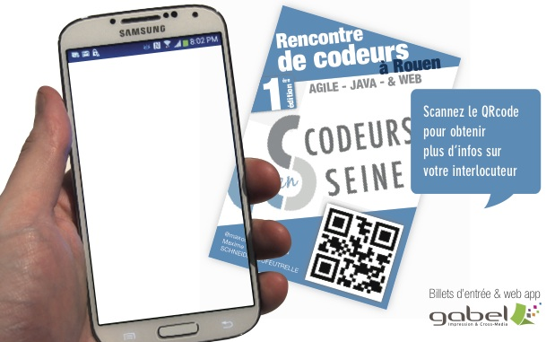
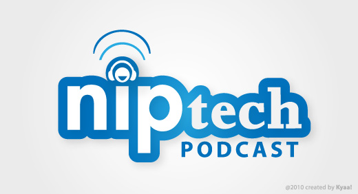
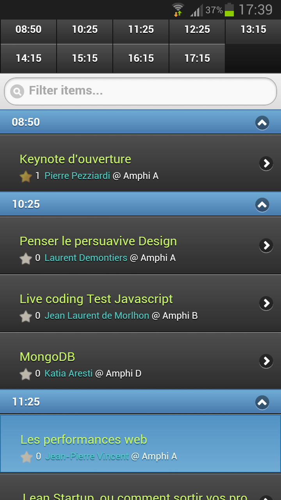

Rencontre de codeurs : Agile, Java & Web
Organisée par 3 associations
Normandy Web eXperts
NWX Tech : Mini-conférences techniques tous les 3 mois
www.nwx.fr
Track Web - Amphi A
- 10:25 - Penser le persuavive Design - Laurent Demontiers
- 11:25 - Les Performances Web - Jean Pierre Vincent
- 12:25 - JS Natif - Matthias Dugué
- 14:15 - As-tu vu mon site ? - Julien Brousse
- 15:15 - Horizons de l'accessibilité - Jonathan Pansiot
- 16:15 - Table ronde sur la qualité web - Delphine Malassingne
Normandy Agile user group
Sessions Agile tous les 3 mois
www.normandyjug.org/naug
Track Agile - Amphi B
- 10:25 - Live coding Test Javascript - Jean Laurent de Morlhon
- 11:25 - Lean Startup, ou comment sortir vos projets des cartons ? - Matthieu Garde-Lebreton
- 12:25 - Continuous delivery chez capitainetrain.com - Frédéric Menou
- 14:15 - Live coding - David Gageot
- 15:15 - Real options - Pascal Van Cauwenberghe
- 16:15 - Software craftmanship - Jean Laurent de Morlhon
Normandy Java User Group
Mini-conférences le 3ème mardi de chaque mois
INSA de Rouen / Exia Cesi
- novembre - à définir
- 17 décembre - Mathilde Lemée - FluentLenium ou Le cache distribué
- janvier... - appel à volontaire
www.normandyjug.org
Track Java - Amphi D
- 10:25 - MongoDB - Katia Aresti
- 11:25 - Fork/Join, Parallel Arrays, Lambdas: La programmation // (Trop ?) facile - José Paumard
- 12:25 - Fifty new features of Java EE 7 in 50 minutes - Antonio Goncalves
Track Java - Salle Honfleur
- 14:15 - Come and Play! with Java EE 7 - Antonio Goncalves
- 15:15 - Javascript pour les javaistes - Christophe Jollivet
- 16:15 - Qu'est-ce qui rends Groovy groovy ? - Guillaume Laforge
Track Java - Salle Mont Saint Michel
- 14:15 - Cloud - Le cloud dans la vraie vie - Samuel Liard
- 15:15 - Cloud - Monitoring & Management - Alexis Moussine-Pouchkine
- 16:15 - Cloud - Architecture Pattern - Nicolas De Loof
Track Java - Salle Etretat
- 14:15 - Dev ops - One Number to rules them all - Bertrand Paquet
- 15:15 - Implémenter la qualité sur un projet java - Vincent Massol
- 16:15 - Android, passons au niveau supérieur - Eyal Lezmy
Buffet - 13:15 - Atrium
Réseautez!
Enregistrement podcast Nip Dev
17:15 - Amphi D
Le programme sur votre mobile
app.voxxr.in
Samedi 19 octobre, 14h30 à Seine Innopolis

Initiation à la programmation pour les 8 - 14 ans